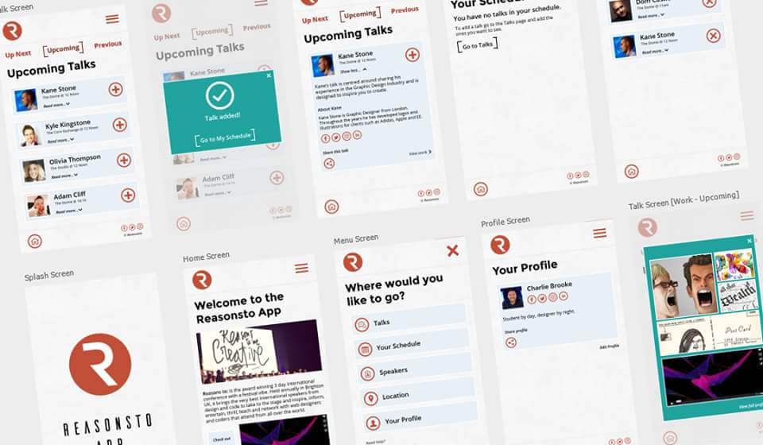
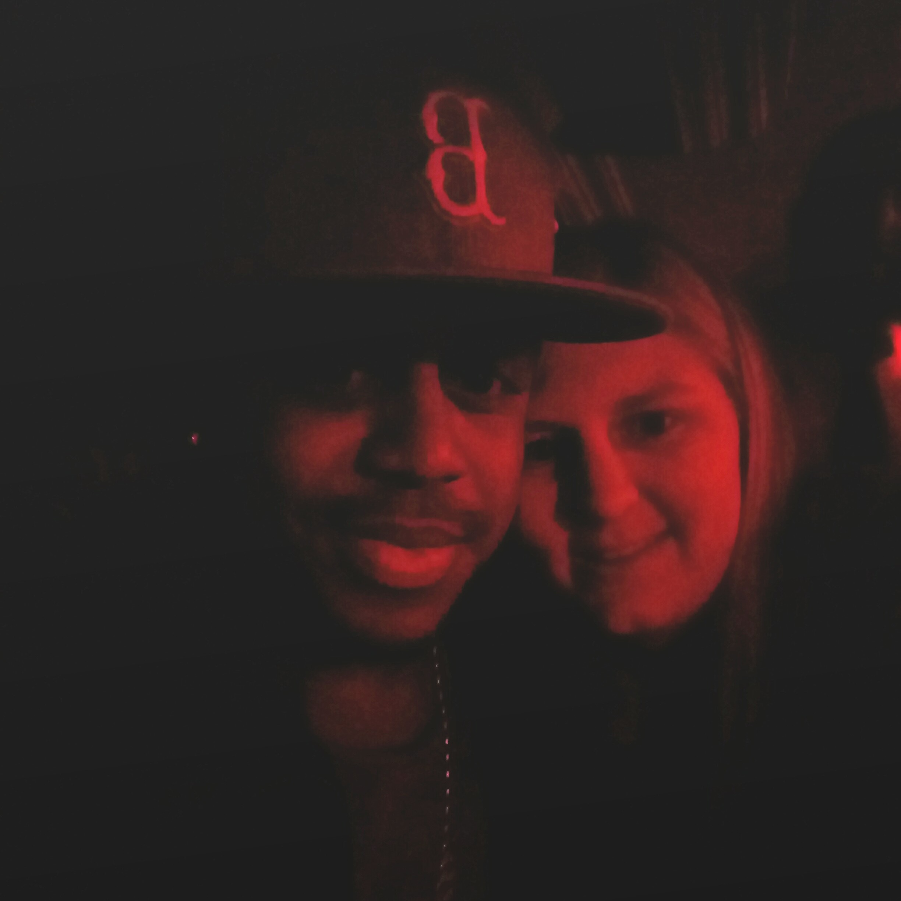
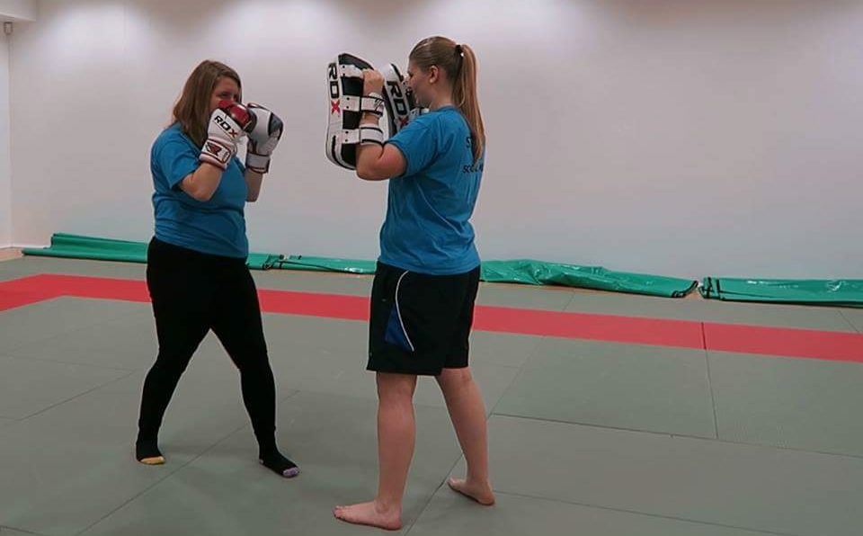
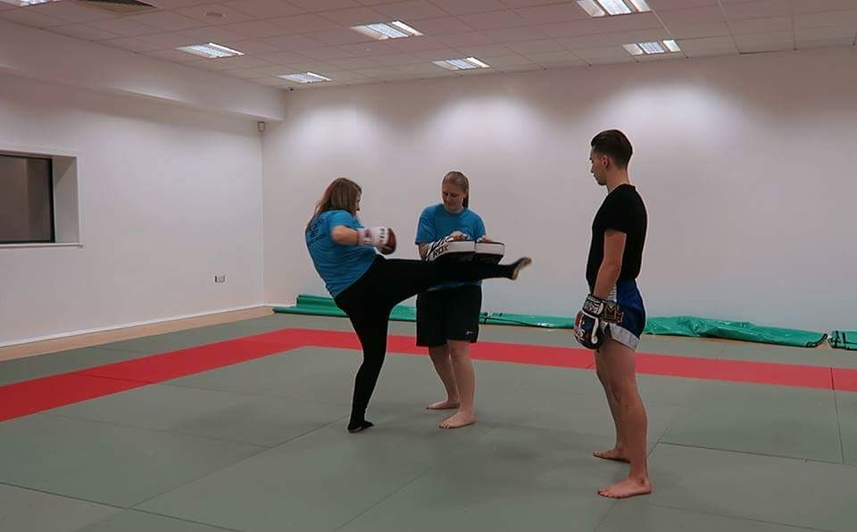

A Snapshot of my Student Life
Published: 10th December, 2016
Student life is different for everyone, even though we all have to attend lectures! As a Web Technologies student I spend the majority of my time sat in front of a computer either writing code or designing. To give you more of an insight into what my student life is really like I am sharing what I got up to in the week commencing the 28th November.
Monday 28th November
10:45am
My alarm goes off and I instantly reach for my phone to turn it off it. To wake myself up I check through social media. Before getting ready to leave for University I eat my usual breakfast of toast and a cup of tea. At 11am I leave my flat and do the very short walk to University.
11:15am to 1:15pm
I arrive to my first lecture of the day which is for our Individual Project. This module gives us complete freedom over what we do and how we spend our time. I actually didn’t do any work for Individual Project and instead applied for a few placement jobs and caught up with my course mates.
1:15pm
Once the lecture had finished I headed home to work on my Visual Design assignment. For this assignment I am designing a companion app for the conference Reasonsto. I looked through the feedback I’d been given last week and set out creating a new template screen on Adobe Photoshop. This contained all the elements that would be used on every screen and all the heading fonts and sizes on. I checked that the sizes of the elements on the template screen were easily readable by putting them on Marvel, which is a prototyping tool.

After I’d finished the template screen I ate lunch. Today I decided on a chicken and mushroom Pot Noodle. I then quickly washed my pots and walked back to University.
3:15pm to 5:15pm
I arrived back at University for my last two classes of the day. The first is a seminar and the final one is a lecture for Web Design and Programming. The topic for both of these were on user authentication which involved looking at Web Cookies and Sessions to store user details securely.
5:30pm
I got back from University and put my tea on straight away as I was starving. I had burgers with bacon, pigs in blankets, duck spring rolls and cheesy chips.
6:30pm onwards
After tea I spent the rest of the evening chilling out watching Netflix (I'm currently making my way through Teen Wolf), chatting with my friends and watching I’m a Celeb!
Wednesday 30th November
11:45am
Woke up naturally as Wednesday’s are my day off and time to catch up on much needed sleep. I checked social media before getting out of bed, ate breakfast and got dressed before leaving the flat to go to the Placement Drop-in Session.
1:30pm to 4pm
Went to the placement unit to get two of my covering letters I’d written approved before sending them off. As the placement unit was extremely busy I started going through the Warner Bros online application whilst I waited. After a bit of a wait I had my covering letters checked. I had to make some slight changes but I got some really good advice and they also helped me with the Warner Bros application I’d started.
4pm to 4:50pm
I went shopping straight from the placement unit for my weekly shop. I brought all sorts of items to keep me stocked up for another week. I spent more than I wanted to and the bags were really heavy making the walk back the flat very uncomfortable and tiring.
5pm to 6pm
After putting my shopping away I sat back down at my computer and continued working on my Visual Design assignment. I created a few more screens, making small but good progress with the assignment.
6pm
Tea was finally cooked. I sat down while watching Teen Wolf and ate my sausages and cheesy chips.
7pm
After washing my pots I started get ready for this week’s Thai Boxing social. The theme was Baywatch/Lifeguard’s. I had and shower, got in my outfit which was my red lifeguard top and white shorts and had a few cans of cider before heading out to meet everyone.
8:45pm onwards
The rest of the night was spent with the Thai Boxing society going round our usual route of bars and clubs. We ended up in Tokyo where S Club were performing. We were given a VIP booth where we were right next to Bradley and JoJo. We managed to get pictures with Bradley and had an amazing view from the VIP booth of them performing. It was a really good night with my friends.

Friday 2nd December
7:30am
Woke up to the sound of my alarm which made me jump as I was extremely tired that morning because I didn't sleep very well. I got out of bed, after checking social media, and ate my breakfast which was again toast and a cup of tea. I then got ready to go to work. I work as a Student Ambassador for the University.
8:45am to 3:10pm
arrived at University for the start of my shift. The event I was helping out with today was the Universities Open Day. Throughout the day I was there on hand helping the members of staff with the talks and tours and making sure people were going to the right rooms.
3:15pm to 3:45pm
After work I went straight into town to get some presents for my family. Managed to get four presents but after getting back to my flat I noticed one was damaged so I need to go back at some point and see if I can get it changed.
4pm to 5pm
Before having my tea I continued to work on my Visual Design assignment and created a few more screens for the app I am designing.
5pm
Tea time! Tonight’s tea was left over pizza from the previous night and potato wedges.
6:20pm to 8pm
After my tea and getting into my gym gear I walked to University to meet Molly. We then walked up to the Leisure Centre as we were filming the second episode of our YouTube series Society Spotlight. This consisted of us interviewing the captain of the society and then actually giving it a go.


After filming, I stayed for training. Tonight’s training was dedicated solely to sparring. It was really tough and I got hit in the face quite a bit. It was a great session though and I really enjoyed it.
8:30pm to 10pm
Got back to flat just in time to watch I’m a Celeb with Lauren (my friend).
10pm onwards
Watched rubbish on TV and chatted with Lauren till we were both tired.
I hope this has given you a good insight into what my life as a student is like. If you have any questions about Univeristy feel free to leave me a comment.